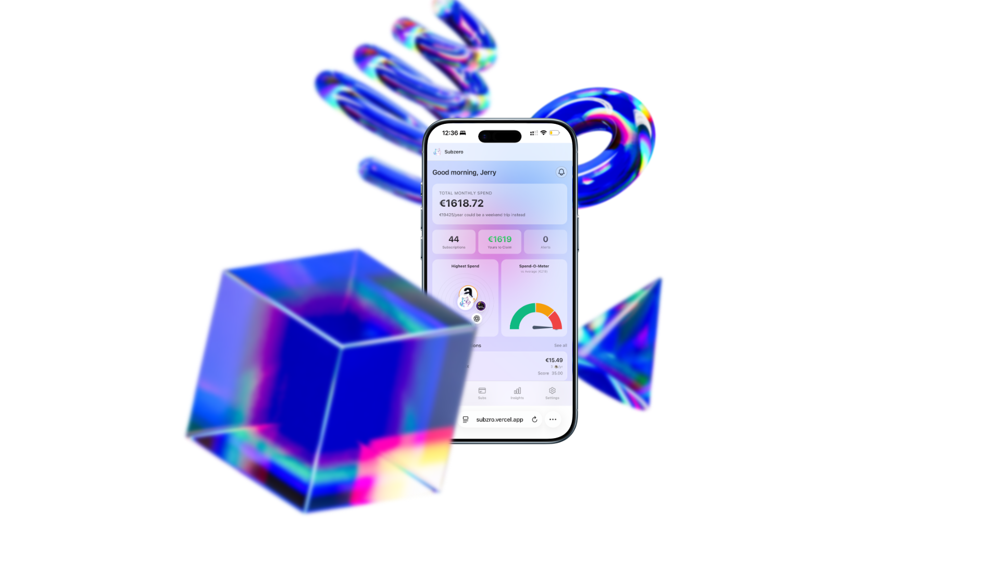
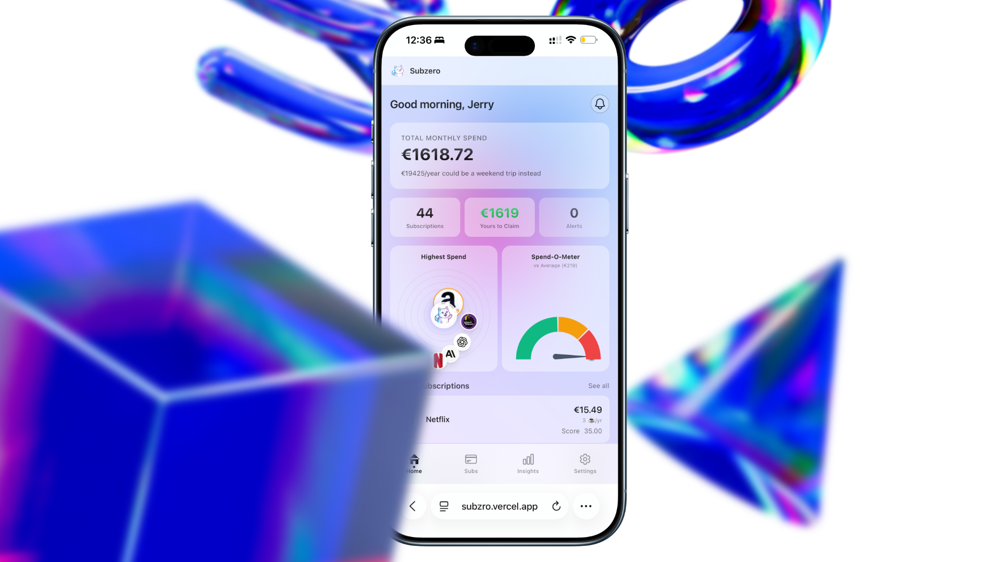
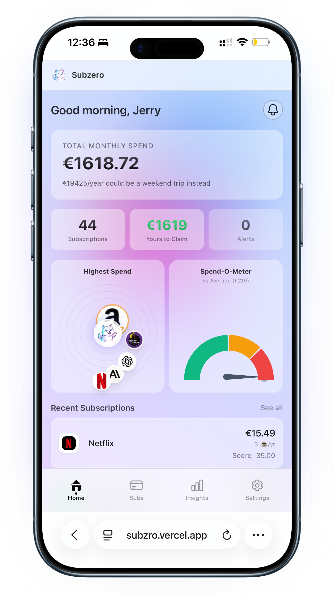
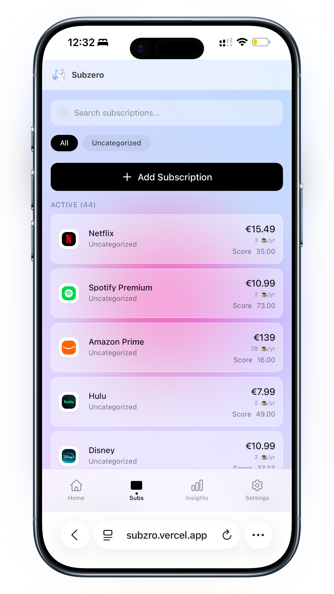
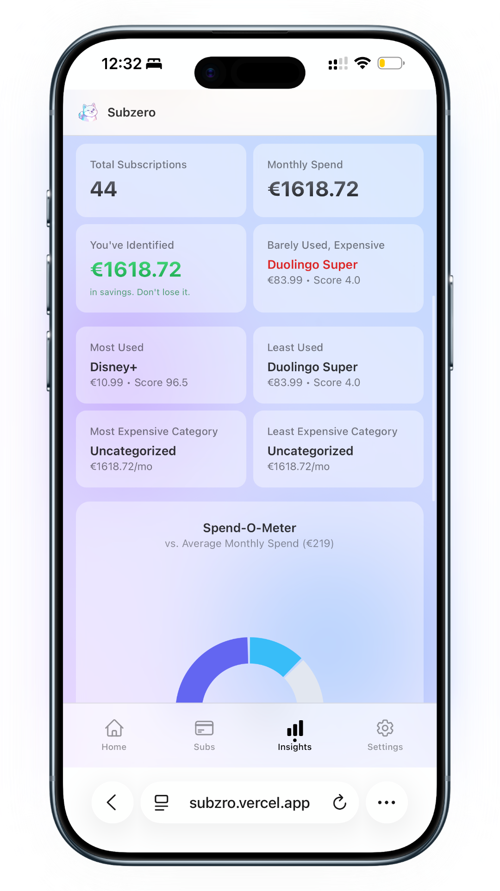
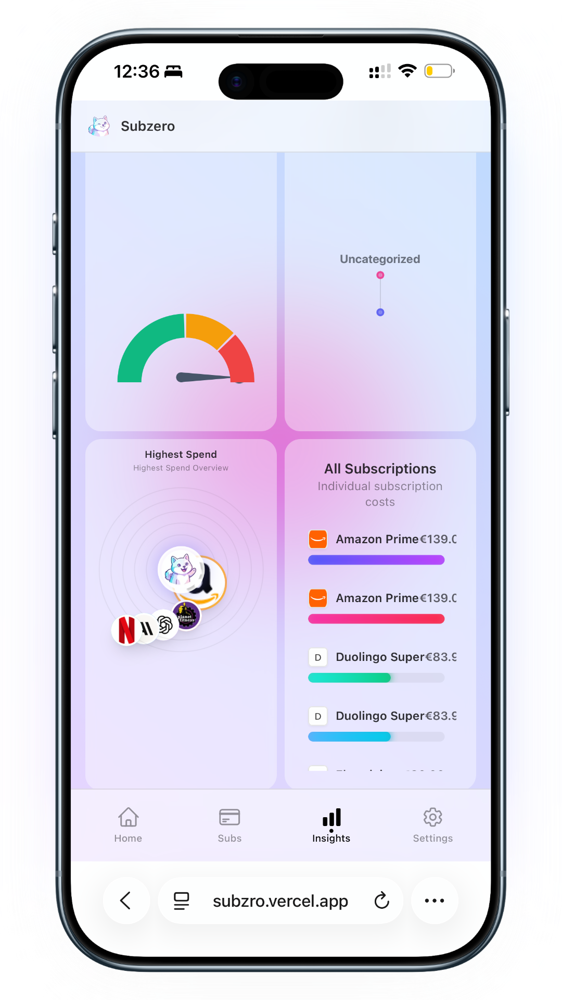

“Don't be satisfied with stories, how things have gone with others. Unfold your own myth.” - Rumi
A subscription intelligence product that turns recurring charges into clear decisions, reclaimable savings, and calmer money habits.

Monthly exposure, highest-spend services, and alert state land in one fast read.
Potential recovery is framed as money that can be won back, not abstract budget advice.
The product reduces onboarding resistance and keeps trust high from the first session.
Usage reminders borrow the logic of a "still using this?" check instead of punishment loops.
Subzro pushes further. It frames recurring spend as a living system: what costs the most, what gets used the least, and what can be reclaimed right now.
That matters because the real problem is not visibility alone. It is decision fatigue. People need a product that helps them decide, not just observe.
The interface pairs soft gradients and mascot energy with disciplined information hierarchy so serious numbers still feel approachable on a phone.
The screenshots now show a coherent product story: overview, subscription management, and deeper insight all speaking the same visual language.





Instead of pushing finance jargon, it answers simple user questions: What am I paying for? What do I barely use? What can I recover without friction?
Dashboard summaries, least-used signals, and recoverable spend are driven by aggregated subscription data, which gives the visuals real product weight.